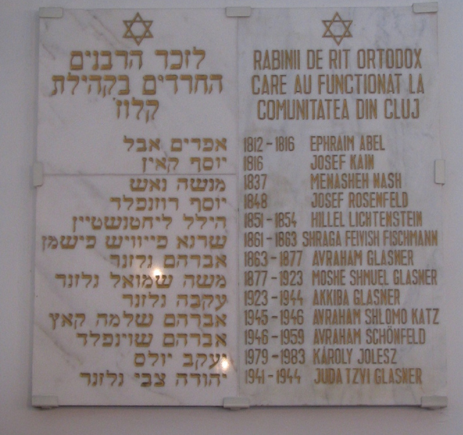
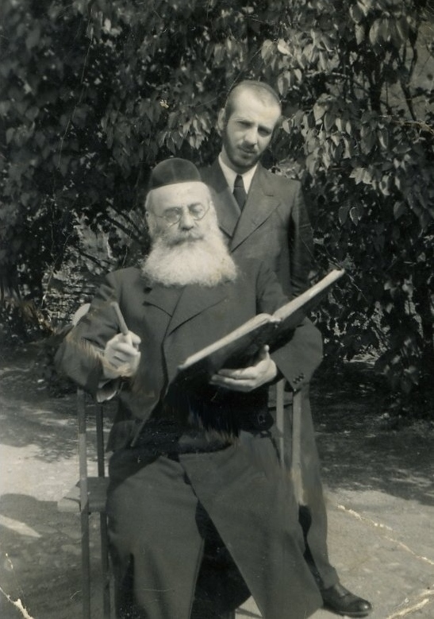
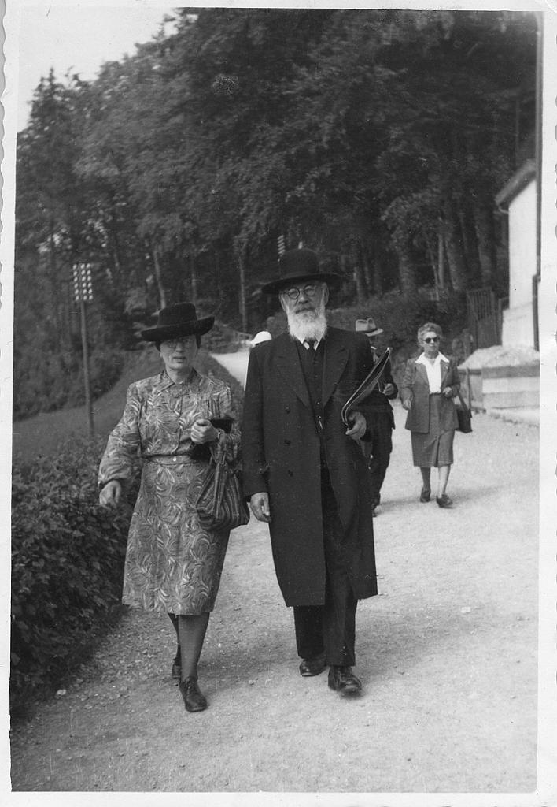
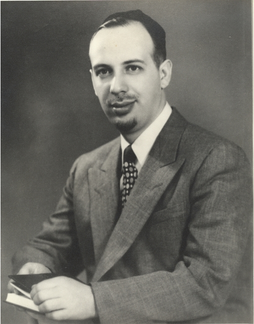
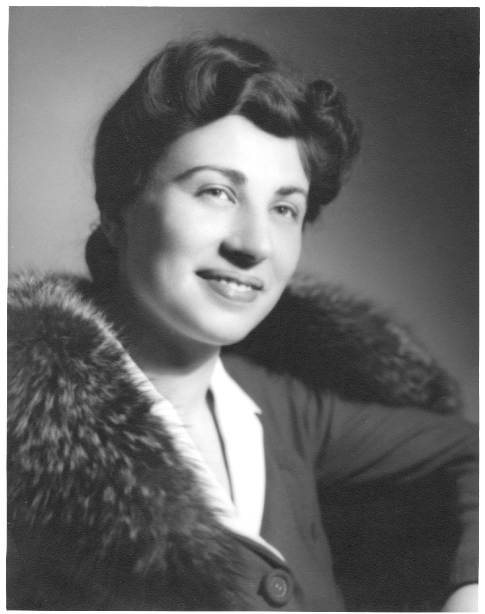

מורשת גלזנר
לזכר
הרב יודא צבי בן
הרב עקיבא
ורעיתו
הרבנית דבורה בת
הרב חיים אהרון דוד דייטש

The Orthodox Rabbis of Klausenburg
(Cluj, Kolozsvár) from 1812 to 1983
An account of orthodox rabbis serving in Klausenburg was given by
Shlomo Zimroni.
רב יודא צבי was the Deputy Chief Rabbi of Klausenburg from 1941 until its destruction in 1944.

The last אב"ד of Klausenburg,
רב עקיבא
and his son, רב יודא צבי
Rabbi Glasner was born in Hanishavitz Czechoslovakia on ח סיון תרע"ח, the son of Rav Akiva Glasner דור דורים who later succeeded his father as the אב"ד of Klausenburg משה שמואל known for his ספר דור רביעי על מסכת חולין and the son of Rabanit Miriam Hindel, the daughter of רב יודא צבי בלום known for his ספר שאלות ותשובות שארית יהודה the rav of Hanishavitz and was the son of רב עמרם בלום known for his ספר שאלות ותשובות בית שערים and the grandson of רב עמרם רוזנבוים aka רב עמרם חסידא.

After the Holocaust רב עקיבא and רבנית מרים הימדל in Zurich, Switzerland

רב יודא צבי גלזנר
Rebbetzin Devorah Glasner was born ט"ז אב תרפ"א in Balassagyarmat, (also see Holocaust in Balassagyarmat ). Her father was the Rav of Balassagyarmat, Chaim Aharon Dovid Deutsch. His sefer, תבואת גורן, was republished in Petach Tikva תש"ך by his חתן Rav Pinchas Kalman.
Rav Yosef Yisroel Deutsch was the father of Rav Chaim Aharon Dovid Deutsch and preceded him as Rav of Balassagyarmat. He is בעל the בן גורני, על חמשה חומשי תורה . A new 2 volume edition בן גרני חלק ב בן גרני חלק א of this ספרֲ was recently published by Mordechai Snider, דור חמשי לבן גורני.
He chose the name בן גורני in awe of his father the גורן דוד, Rav Aharon Dovid Deutsch, who preceded him as the Rav of Balassagyarmat and descendant of the Maharal מהר"ל who is believed to be a descendent of דוד המלך,
Rebbetzin Devorah Glasner's mother was
Shifra Liba, the daughter of Rav Shaya Zilberstein, the אב"ד of Weitzen (Vác),
ח”ב מעשי מלך ח”א
who was the son of Rav Dovid Yehuda Zilberstein

רבנית דבורה גלזנר
יודא צבי and דבורה were married on ט"ו סיון תש"א in the bet knesset of Balassagyarmat
A letter from the Rav of Balassagyarmat, Chaim Aharon Dovid Deutsch to his son-in-law Rabbi Glasner, 1941.
Rebbetzin Deborah Glasner, her son, and other family members, were on the Kasztner Train (see the passenger list and other Glasner's in Bergen-Belsen) and thus survived the deportation of Hungarian Jewry. The account of Rabbi Glasner's escape from labor service can be found in his memoir, Faith In Spite Of All. The Glasners and elder Glasners received an unauthorized Salvadoran citizenship certificates from George Mandel-Mantello.
An acknowledgement from Count Folke Bernadotte sent to Rabbi Glasner and the other Rumanian refugees in Stockholm circa 1947.
A photograph taken at the Helsingmo, Sweden DP camp circa 1947.
A photograph of Rabbi Simcha Wasserman, Rosh Yeshiva of Ohr Elchonon at the bar mitzvah reception of Rabbi Glasner's older son, June 1955.
A photograph of sephardic Chief Rabbi Nissim meeting with Rabbi Glasner, and two uncles, Yitchok Glasner and Yosef Blum circa 1966.
A response from Rabbi Glasner supporting Chabad Rabbi Boruch Shlomo Cunin's efforts to establish Released Time Religious Instruction in Los Angeles public schools, February, 1967.
The memoir of Rabbi Glasner, Faith In Spite Of All .
Rabbi Glasner received the George Washington Award from the Freedoms Foundation at Valley Forge after the publication of his memoir.
A photograph of Rabbi and Mrs Glasner with the Prime Minister of Israel, Menachem Begin.
Rabbi Glasner served on President Carter's Commission on the Holocaust. The Commission's report was submitted on September 27, 1979.
An article by Rabbi Akiva Glasner on parameters of the Yom Kippur fast published by Rabbi Yuda Tzvi Glasner appearing in HaPardes, 1986.
A discussion concerning the prohibition of counting B'nei Yisroel by Rabbi Glasner appearing in HaPardes, 1988.
A discussion concerning the Mitzvah of Counting the Omer in our times by Rabbi Glasner appearing in HaPardes, 1992.
Rabbi Yuda Tzvi Glasner was niftar on ח' אדר א תשס"ה and laid to rest in Jerusalem alongside his great, holy ancestors on י"ב אדר א תשס"ה .
An evening kollel, Yeshivas Klausenburg: Toras Yuda Zvi, was established in memory of Rabbi Glasner. The kollel is in Neve Yaakov and ten young men are learning there nightly. The kollel has branches in Elad and in Baltimore.
A video dedicated to Rabbi Glasner by granddaughter Ruth Snider shown at the Bar Mitzvah celebration of her eldest son, Avi.
Reminiscences of Joanne Yelenik, mother of Rabbi Daniel Yelenik, the husband of granddaugther Sharon.
On ז' סיון' תשס"ח the ברית of the eight day old son of Rabbi Josh and Dr. Dana Dachman-Soled took place. He is the first great grandson born after the פטירה of Rabbi Glasner and is named יהודה צבי . Here is the דבר תורה given by Rabbi Josh Dachman-Soled during the סעודת מצווה .
Rebbetzin Deborah Glasner was niftar on כ"ג טבת תשס"ט and laid to rest in Jerusalem along side her husband on כ"ה טבת תשס"ט .
A letter about Devorah Glasner from Joanne Yelenik.
{kind=link}
{kind=link}
{kind=link}
{kind=link}
{kind=link}
{kind=link}
{kind=link}
{kind=link}
{kind=link}
{kind=link}
{kind=link}
{kind=link}
{kind=link}
{kind=link}
{kind=link}
{kind=link}
{kind=link}
{kind=link}
{kind=link}
{kind=link}
{kind=link}
{kind=link}
{kind=link}